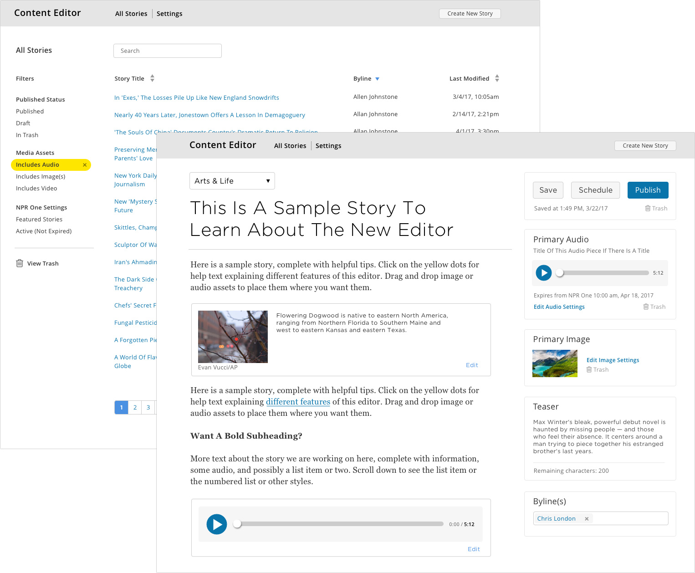
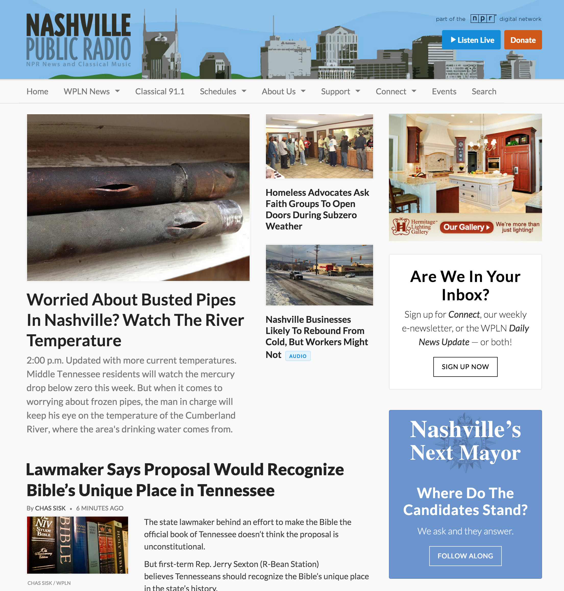

Hello, I'm Adam Kiryk, a front end developer and designer
I work at the intersection of user experience, visual design, and code, and I focus on creating beautiful, well-crafted, and accessible websites — and I'm always passionate about usability, maintainability, and performance.
skills
code
ux + design
communication
collaboration
work
I worked for NPR from 2011 to 2017, doing product design, user experience, and front end development on websites and web applications used by NPR member stations. Before that, I worked at Arnold Worldwide, where I created websites and digital campaigns for brands like Progressive Insurance, RadioShack, and Ocean Spray.
Story Editor for NPR Stations
I led UX and wrote code for this internally facing web application designed to help member stations create local content for distribution across NPR properties.
- Created custom components using React.js
- Used Redux to manage state
- Researched station needs and created a streamlined visual design
- Led team through a design sprint that helped guide product strategy
- Initiated a living styleguide based on PatternLab.io
Core Publisher News Platform
I led UX research, designed the information architecture, and wrote front end code for Core Publisher, a website publishing system we built to help small and medium-sized NPR stations create digital content and expand their audience.
- Researched station and user needs
- Designed and built a responsive Drupal theme adopted by over 160 stations
- Created a flexible yet simple system for handling station branding
- Wrote front end code for the home page and story pages
- Iterated on story page design to increase user engagement and meet station needs
Community Calendar

I designed and helped build this online calendar created to help NPR stations promote local events. Using it, members of the public can submit events for consideration; stations can publish those events and add their own as well.
- Streamlined the way stations manage user-submitted events, saving time and effort for editors
- Created clickable prototypes for testing design ideas with stations
- Designed a simple but clear system for users to find and display event information